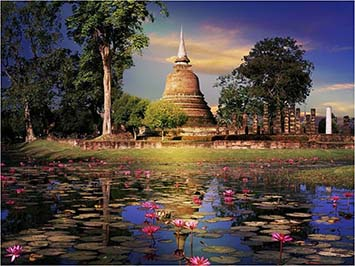

Top reizen

Cambodja
Choum Reap Souar! De tempels van Angkor Wat in de buurt van het plaatsje Siem Reap zijn de hoogtepunten van de rondreis naar Cambodja. Je bezoekt de hoofdstad Phnom Penh en maakt kennis met kleine rustige, plaatsjes in een landelijke omgeving. Maak kennis met deze nog steeds authentieke omgeving met hun vriendelijke bevolking en landelijke sfeer.

Zuid Korea
Ahn nyeong ha sae yo! We beginnen onze reis in Seoul, de hoofdstad van Zuid-Korea. Via het Chungjumeer gaan we door naar Andong met zijn prachtige openluchtmuseum. Bewonder de Haeinsa in Gayasan nationaal park. Na een bezoek aan Gyeongju, reizen we door naar Busan, de tweede stad van het land. Hier overnachten we in een tempel. De reis eindigt op het eiland Jeju.

Thailand
Sawadee Krap! Op deze rondreis door Thailand, bezoek je prachtige stranden en eilandjes, de mooie tempels en het koninklijk paleis in de Thaise hoofdstad Bangkok en het Sam Roi Yot park. Maak een boottocht in de spectaculaire Phang Nga baai. Het Khao Sok park is wellicht het mooiste natuurgebied van het land. Op eiland Koh Pha Ngan kun je snorkelen en duiken.

Nepal
Namaste! Begin en eindig de reis in de hoofdstad Kathmandu. Bekijk het Durbar plein, de boeddhistische stupa’s en de hindoeïstische heiligdommen. Je brengt een bezoek aan Bhaktapur, de andere koningsstad in de Kathmandu vallei. In het Annapurna gebied komen de hoge bergpieken van de Himalaya erg dichtbij. In Chitwan NP kun je op zoek naar de Indische neushoorn.

Brunei
Selamat Datang! De reis begint in Sandakan. Van daaruit reis je naar Bandar Seri Begawan, de hoofdstad van Brunei. Neem een kijkje bij de orang-oetangs in Sepilok, Bezoek de zeeschildpadden op "Turtle Island" in Selingan, stap op de boot in Sukau en ervaar een prachtige boottocht over de Kinabatangan rivier waar de grootste Flora en Fauna van heel Maleisië en Borneo zich bevindt!

Bali
Oom Swastiastu! Je begint met een rondreis langs alle bezienswaardigheden van Bali. U komt langs de oude steden van vroegere koninkrijken, beroemde vulkanen zoals de Gunung Agung en Gunung Batur, traditionele dorpen en tempels zoals Ubud, Batubulan, Gadjah, Candidasa, Goa Lawah, het Klunkung Paleis en nog veel meer. De reis kan worden geeindigt in het prachtige Kuta of Sanur.